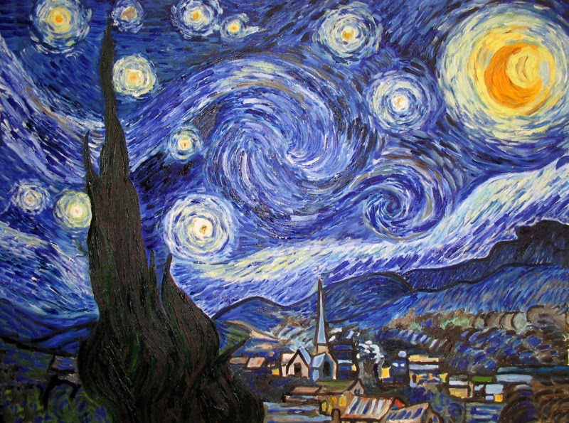

 Notte Stellata Notte stellata di Vincent van Gogh è uno degli ultimi inquietanti dipinti che realizzò l'artista prima di terminare tragicamente la sua vita. 1889 Oleografia su tela Museum of Modern Art, NY Artist Source